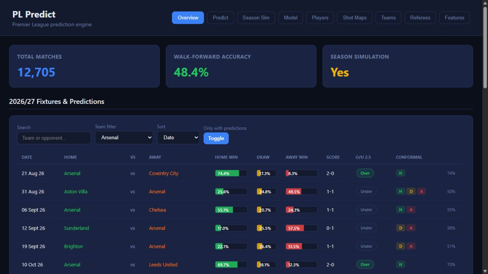
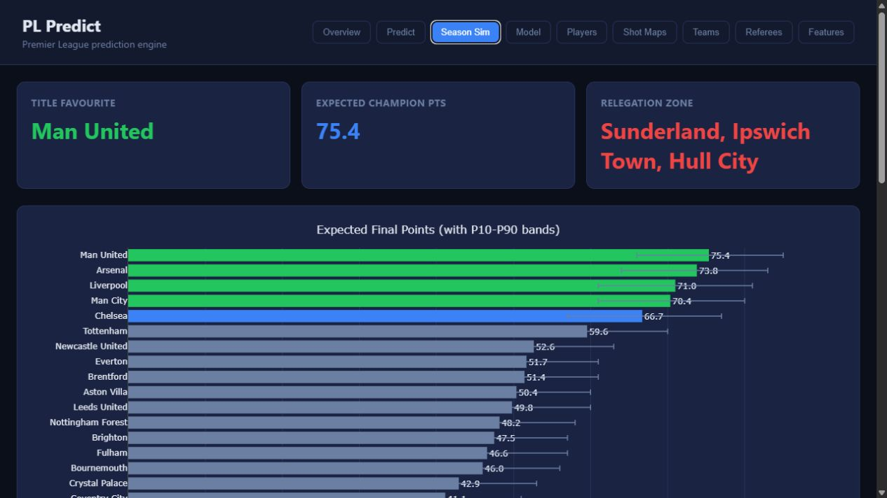
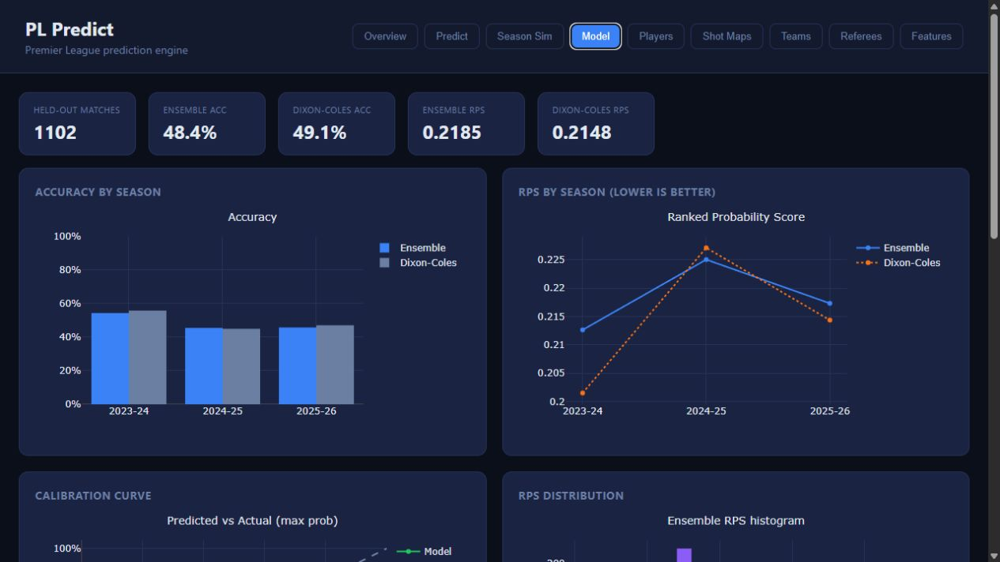

Install once
Copy the command above into PowerShell. PL Predict installs under your user account—no administrator access required.
LOCAL PREMIER LEAGUE INTELLIGENCE
PL Predict is a complete Premier League prediction workspace: fixture forecasts, expected goals, season simulations, team and player analytics, model diagnostics—and FPL projections when you want them.
irm https://raw.githubusercontent.com/kianjindal2010/pl-predict/main/scripts/install.ps1 | iex
Windows 10/11 · PowerShell · installs Git and Python 3.12 with Winget if needed
Copy the command above into PowerShell. PL Predict installs under your user account—no administrator access required.
Then type pl-predict in PowerShell or Command Prompt, from any folder.
It opens your local dashboard with match forecasts, table simulations, player and team analytics, and refreshed FPL projections.
ONE MODEL. THE FULL PICTURE.
Home, draw and away probabilities, expected goals, likely scorelines, clean sheets, BTTS and totals.
Monte Carlo table simulations with title, top-four and relegation probabilities.
Form, xG, shots, historical match data, attendance, referees and model performance.
A dedicated feature combining official FPL xP with fixture-level PL Predict context.
REAL DASHBOARD, LOCAL DATA
Built-in views make every prediction inspectable—from fixture probabilities and scorelines to final-table simulations and walk-forward diagnostics.



PACKAGED DATA SNAPSHOT
The shipped model uses a transparent historical snapshot. Inspect its walk-forward results in the local Model view; past metrics are not a guarantee of future results.
HYBRID xP
Official availability, player form and FPL expected points stay visible. The PL Predict contribution uses the current match model’s win, clean-sheet and expected-goal outlook for every upcoming fixture.
LOCAL BY DESIGN
127.0.0.1:8000.Vercel hosts this installer page only; your data, model and full dashboard stay on your Windows computer. Launching the app refreshes official FPL player, availability, fixture and event data for the FPL Picks feature—it does not silently retrain the historical match model.
pl-predict is not recognisedClose the terminal after installation, open a new PowerShell or Command Prompt window, and try again. The installer adds its launcher to your user PATH.
Check your internet connection and run pl-predict refresh-fpl. The dashboard can still start with its last local data.
Run the installer command again. It safely pulls the latest app code without deleting local runtime snapshots.